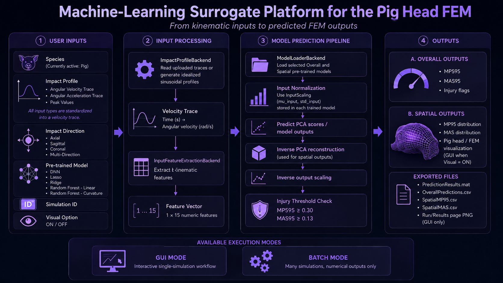

Select Species
Memar Lab is developing this platform to support TBI modeling across multiple animal species, helping experimental researchers predict biomechanical responses at the tissue and axonal tract levels, investigate injury mechanisms, and plan experiments. Currently, only the porcine rapid rotational TBI model is available.
Velocity Trace Preview
Choose an input file to preview the velocity trace.
Try it: (peak accel. 150,000 rad/s², peak vel. 100 rad/s).
1. Dataset Distribution
2. Overall Prediction
Cut planes
Tick one or more planes to slice both brains. The sliders move the cuts in both views at once.
3. Spatial MPS Distribution
4. Spatial MAS Distribution
Drag to rotate · pinch or scroll to zoom · two-finger or right-drag to pan. Colours: jet, MPS 0–0.5, MAS 0–0.15.
Batch mode
Run many CSV files at once. All files in one batch must use the same input type, direction and model. File names (without .csv) become the Simulation IDs; files with template in the name are skipped.
Drop CSV files here, or
or · no folder? pick several files at once.
Instructions
This platform predicts brain tissue response of the pig head finite element model from head impact kinematics. Run one simulation on Input Parameters, or many at once on Batch.
- How to provide inputs: input options and units
- Running one simulation
- Running batch mode
- Expected results
How to provide inputs: input options and units
Three input types are supported. Whatever you choose, it is converted into an angular velocity trace before the 15 kinematic features are extracted. For one run, select one input type. In a batch, every CSV file must use the same input type. Keep the column names exactly as in the templates (downloadable links are in the batch steps below and on the Input Parameters page).
| Input type | CSV columns | Units |
|---|---|---|
| VelocityTrace Angular velocity trace | time_(s)Angular_velocity_(rad/s) | s, rad/s |
| AccelerationTrace Angular acceleration trace | time_(s)Angular_Acceleration_(rad/s2) | s, rad/s² |
| PeakValues Idealized sinusoidal profile | Peak_Acceleration_(rad/s2)Peak_Velocity_(rad/s) | rad/s², rad/s |
VelocityTrace
Use this when your file already contains angular velocity. It is read directly.
time_(s),Angular_velocity_(rad/s) 0,0 0.001,15 0.002,30 0.003,45
AccelerationTrace
Use this when your file contains angular acceleration. It is integrated to angular velocity (trapezoid rule) before feature extraction.
time_(s),Angular_Acceleration_(rad/s2) 0,0 0.001,50000 0.002,100000 0.003,50000
PeakValues
Use this when you only know the peak angular acceleration and peak angular velocity. Enter them in the two boxes, or load a one-row CSV (exactly one row per simulation):
Peak_Acceleration_(rad/s2),Peak_Velocity_(rad/s) 150000,100
An idealized sinusoidal acceleration pulse and its analytical velocity are generated. With αmax the peak acceleration (rad/s²) and ωpeak the peak velocity (rad/s):
T = π · ω_peak / α_max α(t) = α_max · sin(2π t / T) ω(t) = (α_max · T / 2π) · (1 − cos(2π t / T))
The time step is 10 µs (dt = 1e-5 s) and the trace lasts T + 0.020 s: after the pulse, acceleration and velocity are held at zero for an extra 20 ms.
Other settings
- Simulation ID: a name for the run. It labels the results and the downloaded files.
- Impact Direction: Axial, Sagittal or Coronal. The picture beside it shows the rotation on the pig brain. Multi-Direction is reserved for future development; current models are not trained for it.
- Pre-trained Model: DNN, Lasso, Ridge, Random Forest - CART or Random Forest - Curvature.
- Visual: ON draws the 3D spatial MPS and MAS views; OFF skips them (the spatial values stay in the downloadable CSV files).
Running one simulation
- On Species, keep Pig selected (the only species available now) and continue.
- On Input Parameters, enter the Simulation ID, choose the input type and load the file or enter the peak values.
- Choose the impact direction, the model and the visual option. The velocity trace preview appears automatically once the input is valid; you can also press load an example.
- Press Run Prediction. The page moves to Run / Results.
- Review the results, then use Download results (.zip) for the data files or Download report for an .html or .pdf summary.
Running batch mode
Batch mode runs a whole set of CSV files with the same input type, impact direction and model. It runs in your browser; nothing is uploaded.
- Prepare one CSV per simulation from the template that matches your input type (download it here), and keep the column names unchanged:
- Angular velocity traces (VelocityTrace): AngularVelocityTrace_Template.csv
- Angular acceleration traces (AccelerationTrace): AngularAccelerationTrace_Template.csv
- Peak acceleration and peak velocity only (PeakValues, one row per file): PeakValues_Template.csv
SIM_001.csv); files withtemplatein the name are skipped. - Open the Batch page and choose the Input Type, Impact Direction and Model Architecture that apply to every file.
- Drop the CSV files on the drop zone or pick several at once.
- Press Run batch and watch the progress bar. A table of results appears at the end.
- Press Download batch results (.zip).
Batch input rules
- Do not mix input types. If you need velocity traces and peak values, run two batches.
- The file name becomes the Simulation ID:
SIM_001.csv→SIM_001. - Template files are skipped: any file with
templatein its name. - PeakValues files must contain exactly one input row each.
- If one simulation fails, the batch continues with the next file. The failed row is marked
Failedand the reason is inErrorMessage.
Expected results
Regular mode (one simulation)
The Run / Results page shows:
- the overall prediction: MPS95 (threshold 0.30) and MAS95 (threshold 0.13), each flagged when
value ≥ threshold; the result is an injury-level response if either is flagged; - the position of this run in the training-data distribution, with a warning when the input is outside the training range;
- the spatial MPS (each of the 13,196 brain elements) and spatial MAS (each of the 73,425 axonal fibre beams) in two linked 3D views, with cut planes (when Visual is ON).
Download results (.zip) contains a folder named after the Simulation ID with:
<SimulationID>_OverallPredictions.csv <SimulationID>_SpatialMPS.csv <SimulationID>_SpatialMAS.csv <SimulationID>_VelocityTrace.csv <SimulationID>_SpatialMPSPreview.png (Visual ON) <SimulationID>_SpatialMASPreview.png (Visual ON) <SimulationID>_RunResultsPage.png (Visual ON)
Batch mode
The batch page lists one row per input file (status, MPS95, MAS95 and flags). The downloaded .zip contains:
_BatchSummaries/BatchSummary_<date_time>.csv batch_log.txt <SimulationID>/<SimulationID>_OverallPredictions.csv <SimulationID>/<SimulationID>_SpatialMPS.csv (if spatial CSVs are included) <SimulationID>/<SimulationID>_SpatialMAS.csv (if spatial CSVs are included)
Batch mode does not draw 3D views or export screenshots. The batch summary has one row per input file and is the first file to check. Its columns are:
SimulationID, InputFile, Status, ErrorMessage, MPS95, MAS95, MPS95_InjuryFlag, MAS95_InjuryFlag, OutputFolder, OverallCSV, SpatialMPS_CSV, SpatialMAS_CSV
Injury threshold rule
MPS95_InjuryFlag = MPS95 ≥ 0.30 MAS95_InjuryFlag = MAS95 ≥ 0.13
A value below the threshold is below threshold; a value equal to or above it sets the injury flag to true.
About this tool
This is the web version of the Surrogate Pig Head FEM-ML desktop application. It predicts brain tissue response of a finite element pig-head model directly from head impact kinematics using pre-trained machine-learning surrogates.

Outputs
- MPS95: 95th percentile maximum principal strain (injury threshold 0.30)
- MAS95: 95th percentile maximum axonal strain (injury threshold 0.13)
- Spatial MPS: strain for each of the 13,196 brain elements
- Spatial MAS: strain for each of the 73,425 axonal fibre beams
An output is flagged when value ≥ threshold. The result is flagged as an injury-level response if either MPS95 or MAS95 is flagged.
Input formats, units and how to run single and batch predictions are described on the page.
Scientific references
Overall MPS95 and MAS95
The platform uses injury thresholds of 0.30 for MPS95 and 0.13 for MAS95. These thresholds were identified for traumatic axonal injury prediction in the pig brain model.
- Hajiaghamemar, M., Wu, T., Panzer, M.B. and Margulies, S.S., 2020. Embedded axonal fiber tracts improve finite element model predictions of traumatic brain injury. Biomechanics and Modeling in Mechanobiology, 19(3), pp. 1109–1130.
- Wu, T., Hajiaghamemar, M., Giudice, J.S., Alshareef, A., Margulies, S.S. and Panzer, M.B., 2021. Evaluation of tissue-level brain injury metrics using species-specific simulations. Journal of Neurotrauma, 38(13), pp. 1879–1888.
Spatial MPS and MAS
Spatial MPS and MAS outputs are based on the multiscale white-matter-tract embedded FEM framework.
- Hajiaghamemar, M. and Margulies, S.S., 2021. Multi-scale white matter tract embedded brain finite element model predicts the location of traumatic diffuse axonal injury. Journal of Neurotrauma, 38(1), pp. 144–157.
Privacy and accuracy
All computation happens locally in your browser; your files are never uploaded. The numerical pipeline is a line-by-line port of the desktop application and is verified against its output (see tests/parity.mjs). Predictions are only meaningful inside the range of the training data; the app warns when an input lies outside it.